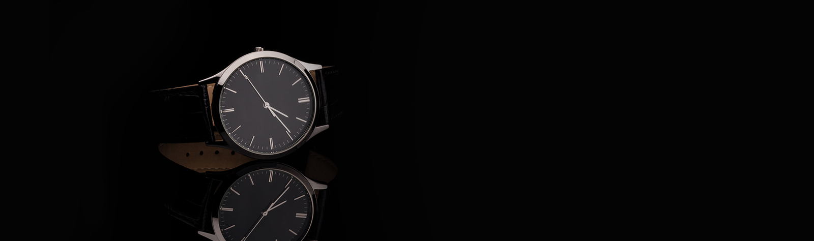

YIQI
首頁
特效
HoneyBear
Horse
Alice
動畫
Overpower
Hedwig
建模
Apple
OSL
程序化建築（Houdini）
客製化建築（Maya）
燈光／合成
燈光
工具
Idle
Unreal
程序化材質
Substance Designer → Substance Painter → Unreal Engine
關於
部落格
部落格 × Special Project | PART2
部落格 × Special Project | PART1
部落格 × Harbour × ETC
部落格 × Harbour
部落格 × VSFX728
EN
繁
简
← 部落格
SCAD x HARBOUR
以下是這次合作十週的進度紀錄。

第 1 週
第 2 週
第 3 週
第 4 週
第 5 週
第 6 週
第 7 週
第 8 週
第 9 週
第 10 週